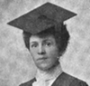

Alison Booth
Douthit, Mary Osborn, ed. The Souvenir of Western Women. Portland, OR: Anderson & Duniway, 1905.
TOC: A Few Recolletions of a Busy Life; Crater Lake; A Legend of Crater Lake; Narcissa Prentiss Whitman; Mrs. Whitman's Diary; The Lewis and Clark Exposition; The Oregon Grape; Roman Catholic Women of the Northwest; Reminiscences of a Trip Across the Plains; A Brave Life and a Useful One; Wannetta (a story); Moriah Maldon Crain; Susan B. Anthony's Visits to Oregon; Life of Mrs. W. H. Gray; Pioneer Women of Methodism in the Northwest; Abigail Scott Duniway, Mother and Home Builder; Charlotte Moffett Cartwright; Sketch from Life of a Pioneer Minister; Eliza Spalding Warren; A Pioneer Country Physician; St. Mary's Academy, Jacksonville, Or; Babies of the Pioneers (Poem); Some Early Oregon Schools; Life Sketch of Mrs. Mary A. Denny; The Dawn of the Sea Wind (a story); St. Mary's Academy and College; Ezra and Lucy Taft Fisher; Dame Nature's Monument; The Two Islands; Sealth and Angeline; The Allen Preparatory School; Pioneering in Legislative Halls; Home Life of Eva Emery Dye; In the Very Early Days of Oregon; St. Helen's Hall; Bishop B. Wistar Morris; Oregon Conservatory of Music; Woman's Work Among the Friends or Quakers; Mrs. Emiline Himes; Julia (West) Lindsley; Washington Women's Clubs; Behnke-Walker Business College; St. Peter's Church and Its Ivy-Clad Tower; My Mother's Flower Garden; Nomenclature of Northwest Mountains; A Grandmother's Story of Early Days in Washington; Hill Military Academy, Portland, Oregon; Early Portland Schools; Woman Workers of the Episcopal Church; Helen F. Spalding; Woman Suffrage in Washington Territory; Academy of The Holy Names, Seattle, Wash; Babtist Women in the Pacific Northwest; Scenic Attractions of the 1905 Exposition; Raising the Flag Over a Northwest Schoolhouse; Woman Suffrage in Idaho; The Ladies' Relief Society; Illustrative Shorthand; Women's Club Work in Idaho; Scenes About the Home of My Childhood; Frances Fuller Victor; Seattle Seminary; The Oregon Women's Flax Industry; Pine Needle Industry; St. Teresa's Academy, Boise, Idaho; Pioneer Days of Mrs. Matilda Frost; The Mercer Girls; The Portland Woman's Union; The College Girl (Poem); In Memory of Narcissa White Kinney; Addison Crandall Gibbs, Oregon's War Governer; Ontario Then and Now; Grant County, the Place for Homeseekers; Portland Academy; Gillespie School of Expression; Women in Medicine; Work of Unitarian Women in the Northwest; The Baby Home; The Woman's Christian Temperance Union; The Woman's Emergency Corps; What Christianity Has Done for the Indian Woman; Woman's Clubs in Oregon; Council of Jewish Women; A Scrap From an Old Diary; The Woman on the Farm; The Woman's Relief Corps; Mrs. Catherine A. Coburn; The Homeward March of the Old Pioneers (Poem); James Harrison and Lueza Osborn Douthit; Judge Pratt in Bedticking; Domestic Science; Roads and Railways -- Early History; Mineral Springs, Nature's Health Reservoirs; The Visiting Nurse Association; The Newill Reverview Academy; Sacajawea, the Birdwoman; The Spirit of the Pioneer Mother; Women on Public Boards; Home Life of Chinese Women in the West; The Young Women's Christian Association; Kindergarten in the Northwest; Art in the Northwest; Life in a Mining Camp; Some Things About the Pacific Monthly; Honor Where Honor is Due.
Contains 62 Illustrations.
-
 Abigail Scott Duniway
Abigail Scott Duniway -
.jpg) Indian Woman of the Umatilla Tribe
Indian Woman of the Umatilla Tribe -
Mr. and Mrs. W. H. Gray
-
Mrs. C. M. Cartwright and grandson
-
Miss Helen F. Spalding
-
 Linda Bronson Salmon
Linda Bronson Salmon -
Frances Fuller Victor
-
Eva Emery Dye
-
Narcissa White Kinney
-
Song of Klootchman
-
Mrs. Catherine A. Coburn
-
James Harrison and Lueza Douthit
-
 Chinese Mother and Children
Chinese Mother and Children
Search OCLC WorldCat for this title.
Search Google Books for this title.